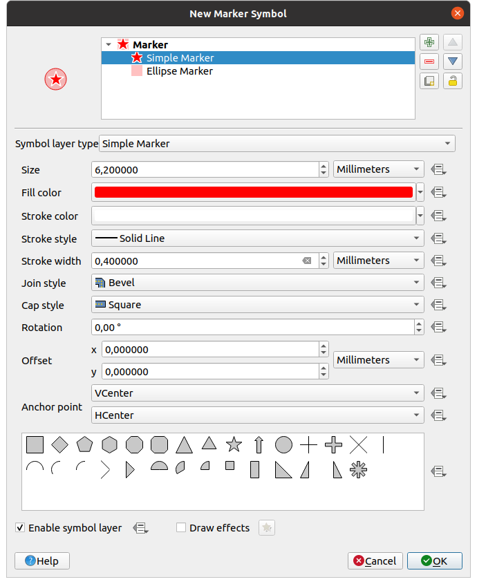
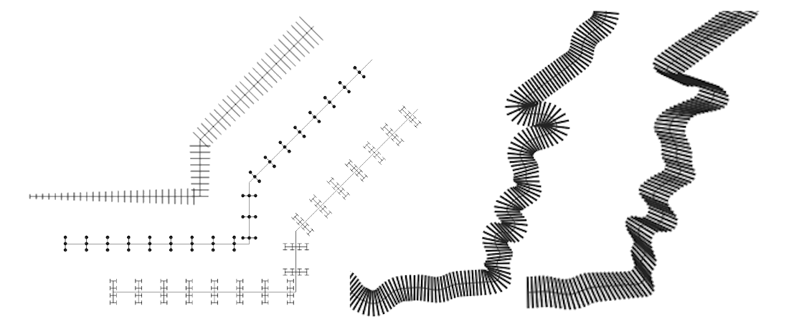

14.2. သင်္ကေတရွေးချယ်သည့်အရာ (The Symbol Seclector)
သင်္ကေတရွေးချယ်သည့်အရာ သည် သင်္ကေတတစ်ခုကို ဖန်တီးပုံဖော်ရန် အဓိက dialog ဖြစ်သည်။ အမှတ်သင်္ကေတ (Marker) ၊ လိုင်းသင်္ကေတ (Line) သို့မဟုတ် အဖြည့် သင်္ကေတ (Fill Symbol) များဖန်တီးခြင်း သို့မဟုတ် ပြင်ဆင်တည်းဖြတ်ခြင်းများဆောင်ရွက်နိုင်သည်။

Fig. 14.10 မျဉ်းကြောင်းတွင် အသုံးပြုမည့် line သင်္ကေတ ဒီဇိုင်းပြုလုပ်ခြင်း
သင်္ကေတ Selector dialog ကို အဓိက အစိတ်အပိုင်းနှစ်ခုဖြင့် တည်ဆောက်ထားသည်-
သင်္ကေတဖွဲ့စည်းပုံ (tree) သည် သင်္ကေတ layer များ ပေါင်းစပ်ထားသော ပင်မသင်္ကေတအသစ် (new global) ဖြစ်သည်။
Tree ထဲရှိ ရွေးချယ်ထားသော သင်္ကေတ layer ကို ပြင်ဆင်သည့် setting များဖြစ်သည်။
14.2.1. သင်္ကေတအလွှာဖွဲ့စည်းပုံ (The symbol layer tree)
သင်္ကေတတစ်ခုတွင် များစွာသော Symbol layers (သင်္ကေတအလွှာများ) ပါဝင်ပါသည်။ သင်္ကေတအလွှာဖွဲ့စည်းပုံ layer tree သည် ပင်မသင်္ကေတအသစ် (new global) တွင်ပါဝင်သော ထပ်၍ ပေါင်းစပ်ထားသော သင်္ကေတ အလွှာများကို ပြသသည်။ ထို့အပြင် သင်္ကေတ properties (ဝိသေသလက္ခဏာများ) ပြောင်းလဲလိုက်သည်နှင့် သင်္ကေတ ဖော်ပြမှုများတပြိုင်နက်ပြောင်းလဲသွားမည်ဖြစ်ပါသည်။
သင်္ကေတ tree item များ၏ ရွေးချယ်ထားသောအဆင့်ပေါ်မူတည်၍ အသုံးပြုနိုင်သည့် tools များရှိပါသည်-
 သင်္ကေတ layer တစ်ခုထပ်ပေါင်းထည့်ခြင်း - မိမိလိုချင်သလောက် သင်္ကေတများကို ဆင့်ထပ်ပြသနိုင်ပါသည်။
သင်္ကေတ layer တစ်ခုထပ်ပေါင်းထည့်ခြင်း - မိမိလိုချင်သလောက် သင်္ကေတများကို ဆင့်ထပ်ပြသနိုင်ပါသည်။ ရွေးချယ်ထားသော သင်္ကေတ layer ကို ဖယ်ထုတ်ခြင်း။
ရွေးချယ်ထားသော သင်္ကေတ layer ကို ဖယ်ထုတ်ခြင်း။သင်္ကေတ layer ၏ အရောင်ကို ပြောင်းခွင့်ပိတ်ခြင်း (lock ပြုလုပ်ခြင်း)။ ပင်မသင်္ကေတ (global symbol) (သို့မဟုတ် အထက်ဆင့် ရှိ) သင်္ကေတများ အရောင်ပြောင်းလိုက်ချိန်တွင်
 lock ပြုလုပ်ထားသော အရောင်မှာ ပြောင်းလဲမည် မဟုတ်ပါ။
lock ပြုလုပ်ထားသော အရောင်မှာ ပြောင်းလဲမည် မဟုတ်ပါ။ သင်္ကေတ layer တစ်ခု သို့မဟုတ် အုပ်စုတစ်ခု ကို duplicate (မိတ္တူပွား) ပြုလုပ်ခြင်း။
သင်္ကေတ layer တစ်ခု သို့မဟုတ် အုပ်စုတစ်ခု ကို duplicate (မိတ္တူပွား) ပြုလုပ်ခြင်း။သင်္ကေတ layer ကို အပေါ်အောက် ရွှေ့ခြင်း။
14.2.2. သင်္ကေတတစ်ခုကို ပြင်ဆင်သတ်မှတ်ခြင်း (Configuring a symbol)
QGIS တွင် symbol တစ်ခုကို ပြင်ဆင်သတ်မှတ်ခြင်းကို အဆင့်နှစ်ဆင့်ဖြင့် လုပ်ဆောင်သည်။ ၄င်းတို့မှာ သင်္ကေတ အဆင့်နှင့် သင်္ကေတ layer အဆင့်တို့ဖြစ်ပါသည်။
14.2.2.1. သင်္ကေတ (The symbol)
ဖွဲ့စည်းပုံ (Tree) ၏ ထိပ်ပိုင်းတွင် ဂျီဩမေတြီ layer ပေါ်မူတည်၍ Marker (အမှတ်)၊ Line (လိုင်း) သို့မဟုတ် Fill (အဖြည့်) ပုံစံများ ဖြစ်နိုင်ပါသည်။ သင်္ကေတတစ်ခုစီတွင် တစ်ခု သို့မဟုတ် တစ်ခုထက်ပိုသော သင်္ကေတများ (အခြား အမျိုးအစားတစ်ခုခု အပါအဝင်) သို့မဟုတ် သင်္ကေတ layer များကို ထည့်သွင်းနိုင်သည်။
အချို့သော parameter (သတ်မှတ်ချက်) များကို ပင်မ (global) သင်္ကေတ ဖန်တီးရန် သတ်မှတ် (setup) ပြုလုပ်နိုင်သည်-
Unit - ယူနစ်သည် Millimeters (မီလီမီတာ) ၊ Points (ပွိုင့်) ၊ Pixels ၊ Meters at Scale (မီတာစကေး) ၊ Map units (မြေပုံတွင်သုံးထားသည့်ယူနစ်) သို့မဟုတ် Inches (လက်မ) ဖြစ်နိုင်ပါသည်။ (အသေးစိတ်ကို ယူနစ်ရွေးချယ်ရာ (Unit Selector) တွင်ဖော်ပြထားပါသည်။)
Opacity (အလင်းပိတ်နှုန်း)
Color (အရောင်) - Parameter ကို ပြောင်းလဲလိုက်သည့်အခါ value (တန်ဖိုး) သည် lock မလုပ်ထားသော sub-symbols (သင်္ကေတအခွဲများ) အရောင်အားလုံးသို့ သက်ရောက်သွားပါမည်။
Size (အရွယ်) နှင့် Rotation (အလှည့်) သည် marker (အမှတ်) သင်္ကေတများအတွက်ဖြစ်သည်။
Width (အထူ) သည် line သင်္ကေတများအတွက်ဖြစ်သည်။
Tip
ပါဝင်သည့် သင်္ကေတအလွှာအဆင့်များတွင် symbol layers အတိုင်းအတာများအားလုံးကို အချိုးကျအရွယ်အစားပြောင်းရန် Size အရွယ်အစား (marker သင်္ကေတအတွက်) သို့မဟုတ် Width လိုင်းအထူ (line သင်္ကေတအတွက်) properties ကိုအသုံးပြုပါ။
Note
Style manager dialog မှ သင်္ကေတကိုသတ်မှတ်လိုက်သောအခါ width (အထူ)၊ size (အရွယ်အစား) သို့မဟုတ် rotation (အလှည့်) parameter များဘေးရှိ Data-defined override ခလုတ်သည် အသက်ဝင်မည်မဟုတ်ပါ။ သင်္ကေတ ကို Map layer နှင့်ချိတ်ဆက်ထားပါက ထိုခလုတ်သည် proportional or multivariate analysis ပုံဖော်ပြသခြင်းကို ဖန်တီးနိုင်ပါမည်။
symbols library ကို အစမ်းကြည့်ခြင်း (preview) - အမျိူးအစားတူသော သင်္ကေတများကို ပြသထားပြီး ပြင်ဆင်နိုင်သော drop-down list တွင် free-form text သို့မဟုတ် categories (အုပ်စု) အလိုက် စစ်ထုတ်နိုင်ပါသည်။
 Style Manager ကိုအသုံးပြုခြင်းဖြင့်လည်း သင်္ကေတစာရင်းကို update ပြုလုပ်နိုင်ပြီး သင်္ကေတတစ်ခုခြင်းကို dialog ဖြင့် ဖွင့်နိုင်သည်။ ထိုနေရာတွင် Style များစီမံခန့်ခွဲရာ (Style Manager) ထဲတွင်ဖော်ပြထားသော လုပ်ဆောင်ချက်များကို အသုံးပြုနိုင်ပါသည်။
Style Manager ကိုအသုံးပြုခြင်းဖြင့်လည်း သင်္ကေတစာရင်းကို update ပြုလုပ်နိုင်ပြီး သင်္ကေတတစ်ခုခြင်းကို dialog ဖြင့် ဖွင့်နိုင်သည်။ ထိုနေရာတွင် Style များစီမံခန့်ခွဲရာ (Style Manager) ထဲတွင်ဖော်ပြထားသော လုပ်ဆောင်ချက်များကို အသုံးပြုနိုင်ပါသည်။သင်္ကေတများကို အောက်ပါပုံစံနှစ်မျိုးဖြင့်ဖော်ပြသည်-
Frame ၏ အောက်ခြေရှိ
 List View ခလုတ် ကိုအသုံးပြု၍ icon list (thumbnail ၊ အမည် နှင့် associated tags (သက်ဆိုင်ရာပူးတွဲများ)) အတွင်း ဖော်ပြခြင်း၊
List View ခလုတ် ကိုအသုံးပြု၍ icon list (thumbnail ၊ အမည် နှင့် associated tags (သက်ဆိုင်ရာပူးတွဲများ)) အတွင်း ဖော်ပြခြင်း၊သို့မဟုတ်
 Icon View ခလုတ်အသုံးပြု၍ icon နမူနာပုံစံ (preview) အနေဖြင့် ဖော်ပြခြင်း၊
Icon View ခလုတ်အသုံးပြု၍ icon နမူနာပုံစံ (preview) အနေဖြင့် ဖော်ပြခြင်း၊
ပြင်ဆင်ထားသော သင်္ကေတများကို သင်္ကေတ library ထဲထည့်ရန် Save Symbol ခလုတ်ကိုနှိပ်ပါ။
Advanced
 option ထဲတွင်-
option ထဲတွင်-Line နှင့် အဖြည့် သင်္ကေတများအတွက် Clip features to canvas extent
အဖြည့် သင်္ကေတများအတွက် Force right-hand rule orientation (လက်ျာရစ်စနစ်အတိုင်းလှည့်ခြင်း) - ကွင်းတစ်ခုတွင် လိုင်း၏အဆစ်ထောင့် (vertex) များ၏အစီအစဉ် (ring orientation) သည် “right hand rule” စံသတ်မှတ်ချက်ကိုလိုက်နာသည့် အဖြည့် သင်္ကေတကို ဖန်တီးနိုင်ပါသည်။ (ဆိုလိုသည်မှာ polygon များတွင် အပြင်ဖက်အနား (exterior ring) ၏ အနားသတ်လိုင်း၏အဆစ်ထောင့်များသည် နာရီလက်တံလှည့်သည်အတိုင်း အစီအစဉ်ဖြစ်ပြီး အတွင်းရှိအပေါက် (interior) များ၏ ring များသည် နာရီလက်တံပြောင်းပြန် ဖြစ်သည်။)
Orientation fix သည် ပုံအဖြစ် ပြသနေသည့်အအချိန်တွင်သာ သက်ရောက်မှုရှိပြီး feature ဂျီဩမေတြီသည် ပြောင်းလဲမည်မဟုတ်ပါ။ ပုံဖော်ပြသနေသည့် feature တစ်ခုချင်းစီ၏ ring orientation များ မည်သို့ပင်ရှိနေသည်ဖြစ်စေ ဤနည်းအားဖြင့် အဖြည့် သင်္ကေတများကို တစ်ပြေးညီအသွင်အပြင် ဖြင့် ပြသပေးနိုင်သည်။
Layer ၏ symbology ပေါ်မူတည်၍ သင်္ကေတကို ပြောင်းလဲမည်ဖြစ်ပြီး Advanced menu တွင် နောက်ဆက်တွဲ setting (အပြင်အဆင်) များ အသုံးပြုနိုင်ပါသည်-
Symbol levels… သည် သင်္ကေတများကို ပုံဖော်ရမည့် ရှေ့ နောက်အစီအစဥ် ကိုသတ်မှတ်သည်
Data-defined Size Legend - အရွယ်အစားတန်ဖိုးကို data မှရယူအသုံးပြုခြင်း
Match to Saved Symbols… (ရှိပြီးသား သင်္ကေတများနှင့် တူညီရန်) နှင့် Match to Symbols from File… (ဖိုင်ထဲရှိ သင်္ကေတများနှင့် တူညီရန်) များဖြင့် (assign symbols to classes) class အမျိုးအစားများကို အလိုအလျောက် သင်္ကေတ သတ်မှတ်ရန်
14.2.2.2. သင်္ကေတ အလွှာ (The symbol layer)
ဖွဲ့စည်းပုံ (tree) ၏ အောက်ခြေ အဆင့်တွင် သင်္ကေတ layer ကို မိမိစိတ်ကြိုက်ပြင်ဆင်နိုင်သည်။ သင်္ကေတ layer အမျိုးအစားများသည် အထက်ဆင့်တွင်ရှိသည့် သင်္ကေတ အမျိုးအစားပေါ်မူတည်ပါသည်။ သင်္ကေတများကို ပုံဖော်ပြသရာတွင် ပိုမိုကောင်းမွန်စေရန် paintEffects| paint effects ကို သင်္ကေတ layer အတွက်ဆောင်ရွက်နိုင်ပါသည်။
သင်္ကေတ layer အမျိုးအစားအားလုံး၏ လုပ်ဆောင်နိုင်သည့်အချက်များ (option) အားလုံးကို ဖော်ပြရန် မဖြစ်နိုင်သောကြောင့်၊ အရေးအကြီးဆုံးနှင့် အရေးပါသော အရာများကိုသာ အောက်တွင် ဖော်ပြထားပါသည်။
အသုံးများသည့် သတ်မှတ်ချက်များ (Common parameters)
သင်္ကေတ layer တည်ဆောက်ရာတွင် marker (အမှတ်)၊ line (လိုင်း) သို့မဟုတ် fill (အဖြည့်) မည်သည့်အမျိုးအစားအတွက်မဆို အသုံးပြုနိုင်သည့် တူညီသည့်ရွေးချယ်စရာ (common option) နှင့် widget များရှိသည်-
color selector (အရောင်ရွေးချယ်သည့်အရာ) ကို အရောင်ခြယ်ရာတွင် လွယ်ကူစေရန် အသုံးပြုနိုင်သည်။
Units (ယူနစ်) သည် Millimeters (မီလီမီတာ) ၊ Points (ပွိုင့်) ၊ Pixels ၊ Meters at Scale (မီတာစကေး) ၊ Map units (မြေပုံယူနစ်များ) သို့မဟုတ် Inches (လက်မ) ဖြစ်နိုင်ပါသည် (အသေးစိတ်ကို ယူနစ်ရွေးချယ်ရာ (Unit Selector) တွင်ဖော်ပြထားပါသည်။)
 Data-defined override widget သည် option တိုင်းနီးပါးတွင် သင်္ကေတများကို စိတ်ကြိုက်ချဲ့ထွင်မှုများပြုလုပ်နိုင်စေသည်။ (အသေးစိတ်ကို Data အရ အစားထိုးလုပ်ဆောင်ခြင်းဆိုင်ရာ ပြင်ဆင်ချက် (Data defined override setup) တွင်ဖော်ပြထားပါသည်)
Data-defined override widget သည် option တိုင်းနီးပါးတွင် သင်္ကေတများကို စိတ်ကြိုက်ချဲ့ထွင်မှုများပြုလုပ်နိုင်စေသည်။ (အသေးစိတ်ကို Data အရ အစားထိုးလုပ်ဆောင်ခြင်းဆိုင်ရာ ပြင်ဆင်ချက် (Data defined override setup) တွင်ဖော်ပြထားပါသည်) Enable symbol layer option သည် သင်္ကေတ layer ၏ မြင်ရနိုင်မှု (visibility) ကို ထိန်းချုပ်သည်။ ပိတ်ထားသော (disabled) သင်္ကေတ layer များကို ပုံဖော်ပြသရာတွင် မရေးဆွဲသော်လည်း ၄င်းတို့ကို သင်္ကေတဖွဲ့စည်းပုံထဲတွင် ဆက်လက်သိမ်းဆည်းထားပါသည်။ အကောင်းဆုံး သင်္ကေတ ဒီဇိုင်းကိုရရှိရန် ရှာဖွေနေစဉ်တွင် (မလိုသည့်) သင်္ကေတ layer များကို မဖယ်ရှားဘဲ ၎င်းတို့ကို ပိတ်ပြီး စမ်းသပ်နိုင်ခြင်းသည် ပိုမိုအဆင်ပြေစေသည့်နည်းလမ်းဖြစ်ပါသည်။ ဖြည့်ရမည့် အချက်အလက်များကို ဒေတာမှရယူအသုံးပြုခြင်း (data-defined) က အားလုံးကိုလွှမ်းမိုးလုပ်ဆောင်သည့်အတွက် သင်္ကေတ layer များကို ပိတ်ထားခြင်း သို့မဟုတ် ဖွင့်ထားခြင်းများကို Expression ဖြင့် ပြုမည်ဆိုပါကလုပ်နိုင်ပါသည်။ (ဉပမာ- feature attribute များ)
Enable symbol layer option သည် သင်္ကေတ layer ၏ မြင်ရနိုင်မှု (visibility) ကို ထိန်းချုပ်သည်။ ပိတ်ထားသော (disabled) သင်္ကေတ layer များကို ပုံဖော်ပြသရာတွင် မရေးဆွဲသော်လည်း ၄င်းတို့ကို သင်္ကေတဖွဲ့စည်းပုံထဲတွင် ဆက်လက်သိမ်းဆည်းထားပါသည်။ အကောင်းဆုံး သင်္ကေတ ဒီဇိုင်းကိုရရှိရန် ရှာဖွေနေစဉ်တွင် (မလိုသည့်) သင်္ကေတ layer များကို မဖယ်ရှားဘဲ ၎င်းတို့ကို ပိတ်ပြီး စမ်းသပ်နိုင်ခြင်းသည် ပိုမိုအဆင်ပြေစေသည့်နည်းလမ်းဖြစ်ပါသည်။ ဖြည့်ရမည့် အချက်အလက်များကို ဒေတာမှရယူအသုံးပြုခြင်း (data-defined) က အားလုံးကိုလွှမ်းမိုးလုပ်ဆောင်သည့်အတွက် သင်္ကေတ layer များကို ပိတ်ထားခြင်း သို့မဟုတ် ဖွင့်ထားခြင်းများကို Expression ဖြင့် ပြုမည်ဆိုပါကလုပ်နိုင်ပါသည်။ (ဉပမာ- feature attribute များ)- Draw effects (ရေးဆွဲပုံဖော်နည်းများ) သည် effects rendering အတွက် ခလုတ်ဖြစ်ပါသည်။
Note
အောက်တွင်ဖော်ပြထားသောဖော်ပြချက်သည် သင်္ကေတ layer အမျိုးအစားသည် feature ဂျီဩမေတြီ နှင့် ဆက်စပ်နေသည်ဟု ယူဆနိုင်သော်လည်း သင်္ကေတ layer များသည် တစ်ခုအတွင်း အခြားတစ်ခု ထည့်သွင်း ပေါင်းစည်းနိုင်သည်။ ယင်းအခြေအနေတွင် အတွင်းကျသည့် (lower level) သင်္ကေတ layer ၏ အချက်အလက်များ (parameter) ဖြစ်သည့် နေရာချထားပုံ (placement)၊ နေရာမှန်မှခွဲခွာဖော်ပြခြင်း (offset) စသည့်များသည် feature ဂျီဩမေတြီ ကိုယ်တိုင်တွင် မချိတ်ဆက်ပဲ အပြင်ဖက်/အထက်အဆင့် (upper level) သင်္ကေတများနှင့် ချိတ်ဆက်နိုင်သည်။
အမှတ်သင်္ကေတများ (Marker Symbols)
Point (တည်နေရာအမှတ်) ဂျီဩမေတြီ feature များအတွက် သင့်လျော်ပြီး အမှတ်အသားသင်္ကေတ (marker symbol) များတွင် သင်္ကေတ layer အမျိုးအစား များစွာရှိပါသည်-
Simple marker (ရိုးရှင်းသည့် အမှတ်သင်္ကေတ (default)
 Fig. 14.11 ရိုးရှင်းသည့် အမှတ်သင်္ကေတ (Marker Symbol) တစ်ခုကို ဒီဇိုင်းရေးဆွဲခြင်း။
ရိုးရှင်းသည့် အမှတ်သင်္ကေတ layer အမျိုးအစားတွင် အောက်ဖော်ပြပါ ဂုဏ်သတ္တိ (properties) များရှိပါသည်-
Size (အရွယ်အစား) တွင် ယူနစ်အမျိုးမျိူးအသုံးပြုနိုင်သည်။
Fill color (အဖြည့်အရောင်)
Stroke color (လိုင်းအရောင်) ၊ ကြိုတင်ထည့်ထားသည့်စာရင်း (list) မှ Stroke style (လိုင်း၏အဆင်) နှင့် Stroke size (လိုင်းအထူအရွယ်အစား)
Join style (လိုင်းတစ်ခုနှင့်တစ်ခုထိစပ်ပုံ) သည် Bevel (စောင်းသတ်) ၊ Miter (စောင်းတိ) သို့မဟုတ် Round (စောင်းလုံး) ဖြစ်နိုင်သည်။
Cap style (လိုင်းထိပ်နှစ်ဘက်) သည် Square (လေးထောင့်) ၊ Flat (အပြား) သို့မဟုတ် Round (အလုံး) ဖြစ်နိုင်သည်။
Rotation (လှည့်ထောင့်)
Offset ကို feature ၏ X နှင့် Y ဝန်ရိုးများအတွက် သတ်မှတ်နိုင်သည်။
Anchor point - ဆိုသည်မှာ သင်္ကေတ၏ အရပ်လေးမျက်နှာ ထောင့် တစ်ခုခုတွင် မူလချထားနေရာအဖြစ် သတ်မှတ်သည့် အမှတ်ဖြစ်သည်။ ဤအမှတ် point သည် Offset အပေါ် သက်ရောက်မှု ရှိသည်။
Ellipse marker (ဘဲဥပုံအမှတ်အသား) သည် အကျယ်နှင့် အမြင့်ကို ပြင်ဆင်နိုင်သည့် simple marker သင်္ကေတ တစ်ခု ဖြစ်သည်။
Filled marker သည် fill sub symbol ကိုအသုံးပြုပြီး marker ကို ပုံဖော်သည်မှလွဲ၍ simple marker သင်္ကေတ နှင့်ဆင်တူဖြစ်သည်။ ၎င်းသည် လက်ရှိသုံးနေသည့် QGIS ၏ အဖြည့် (fill) နှင့် လိုင်းစုတ်ချက် (stroke) များအားလုံးကို marker များ ပုံဖော်ပြရာတွင် အသုံးပြုနိုင်စေသည်။ ဥပမာ- ရောင်ပြေး (gradient) သို့မဟုတ် shapeburst fills များ
Font marker (ဖောင့်) - သည် marker marker ပြုလုပ်ရန်အတွက် ထည့်ထားသည့် ဖောင့် (fonts) များကိုသုံးသည်မှလွဲ၍ simple marker သင်္ကေတ နည်းတူဖြစ်သည်။ နောက်ထပ်အပိုပါဝင်လာသည့် properties များမှာ-
Font family (ဖောင့်အုပ်စု)
Font style (ဖောင့်ပုံစံ)
Character(s) သည် စာသားဖြင့်ဖော်ပြသော သင်္ကေတ ဖြစ်သည်။ ၄င်းတွင် စာရိုက်၍ သော်လည်းကောင်း font ရွေးချယ်၍ သော်လည်းကောင်း font characters widget တွင်ရွေးချယ်နိုင်သည်။ ထို့ပြင် Preview ကို နှိပ်၍ ရွေးချယ်ထားသော setting များ အရဖြစ်လာမည့် အနေအထားကို ကြိုကြည့် (preview) နိုင်သည်။
Geometry generator (ဂျီဩမေတြီဖန်တီးသည့်အရာ (The Geometry Generator) တွင်ဖော်ပြထားပါသည်)
Mask - ၎င်း၏ သင်္ကေတခွဲသည် mask shape (အဖုံးအကာသဏ္ဍာန်) တစ်ခုသတ်မှတ်လိုက်ပြီး ထို mask shape ၏ အရောင် property ကို လစ်လျူရှုနိုင်ပြီး အလင်းပိတ်မှု (opacity) ကိုသာ အသုံးပြုမည်ဖြစ်ပါသည်။ Marker သင်္ကေတ သည် စာများ သို့မဟုတ်အခြား အရောင်ခြင်းဆင်တူသည့်သင်္ကေတ များနှင့် ရောယှက်ထပ်နေသည့်အခါ ဖြစ်သည့် ဖတ်ရခက်ခဲမှုကို ရှင်းလင်းအဆင်ပြေစေပါသည်။ အသေးစိတ်ကို ဖုံးအုပ်ခြင်းဆိုင်ရာ ဂုဏ်သတ္တိများ (Masks Properties) တွင်ဖော်ပြထားပါသည်။
Raster image marker ပုံများ - Image (ရုပ်ပုံ) တစ်ခု (
PNG၊JPG၊BMP…) ကို marker သင်္ကေတ အဖြစ်အသုံးပြုခြင်းဖြစ်သည်။ အသုံးပြုသည့် image သည် disk ပေါ်ရှိ ဖိုင်တစ်ခုသော် လည်းကောင်း၊ အခြား တစ်နေရာကိုညွှန်းသည့် URL အဖြစ်လည်းကောင်း၊ style database ထဲတွင်ထည့်ထားသည့်ပုံ သော်လည်းကောင်း (more details) သို့မဟုတ် base64 string အဖြစ် တိုက်ရိုက်ထည့် (encoded) သုံးခြင်းမျိုးဖြစ်နိုင်သည်။ Image ၏ အကျယ်နှင့် အမြင့်ကို ခွဲ သတ်မှတ်နိုင်သည် သို့မဟုတ် Lock aspect ratio ကိုလည်းအသုံးပြုနိုင်သည်။ common units (အသုံးများယူနစ်) တစ်ခုခုကိုအသုံးပြု၍ အရွယ်အစားကို သတ်မှတ်နိုင်သည် သို့မဟုတ် မူလပုံ၏ အရွယ်အစား ရာခိုင်နှုန်း (percentage) ဖြင့်လည်း သတ်မှတ်နိုင်သည်။ (ပုံ၏ မူလအကျယ်၏ အဆဖြင့် ချုံ့ခြင်း)
Lock aspect ratio ကိုလည်းအသုံးပြုနိုင်သည်။ common units (အသုံးများယူနစ်) တစ်ခုခုကိုအသုံးပြု၍ အရွယ်အစားကို သတ်မှတ်နိုင်သည် သို့မဟုတ် မူလပုံ၏ အရွယ်အစား ရာခိုင်နှုန်း (percentage) ဖြင့်လည်း သတ်မှတ်နိုင်သည်။ (ပုံ၏ မူလအကျယ်၏ အဆဖြင့် ချုံ့ခြင်း)Vector Field marker (Vector အားအမှတ်အသား (The Vector Field Marker) တွင်ဖော်ပြထားပါသည်)
SVG marker - သည် SVG path ( menu ထဲတွင်သတ်မှတ်ပါ) များမှ image များဖြင့် marker သင်္ကေတ ပြုလုပ်နိုင်ရန် ထောက်ပံ့ပေးပါသည်။ သင်္ကေတ၏ အကျယ်နှင့် အမြင့်ကို လိုအပ်သလို သတ်မှတ်နိုင်သည် သို့မဟုတ်
Lock aspect ratio (အမြင့်-အကျယ်အချိုး) ကိုလည်းအသုံးပြုနိုင်သည်။ SVG ဖိုင် အရောင်များနှင့် လိုင်းပုံစံ (stroke) ကို လိုအပ်သလို ပြုလုပ်နိုင်သည်။ အသုံးပြု သည့် image သည် disk ပေါ်ရှိ ဖိုင်တစ်ခုသော် လည်းကောင်း၊ အခြား တစ်နေရာကိုညွှန်းသည့် URL အဖြစ်လည်းကောင်း၊ style database ထဲတွင်ထည့်ထားသည့်ပုံ သော်လည်းကောင်း (more details) သို့မဟုတ် base64 string အဖြစ် တိုက်ရိုက်ထည့်(encoded) သုံးခြင်းမျိုးဖြစ်နိုင်သည်။ထိုသင်္ကေတကို Dynamic SVG parameters များဖြင့်လည်း သတ်မှတ်နိုင်ပါသည်။ SVG symbol တစ်ခုသတ်မှတ်ခြင်းအပိုင်းကို ချိန်ညှိနိုင်သည့် SVG (Parametrizable SVG) တွင်ဖော်ပြထားပါသည်။
Note
SVG version requirements (SVG version လိုအပ်ချက်များ)
QGIS သည် SVG Tiny 1.2 profile ကိုဆောင်ရွက်နိုင်သော SVG ဖိုင်များကို ဆဲလ်ဖုန်းနှင့် PDA များမှ laptop နှင့် desktop ကွန်ပျူတာများအထိ စက်ပစ္စည်းအမျိုးမျိုးတွင် အကောင်အထည်ဖော်ရန် ရည်ရွယ်ထားပြီး ဆဲလ်ဖုန်းနှင့် PDA များမှ သည် laptop နှင့် desktop ကွန်ပျူတာများအထိ စက်ပစ္စည်းအမျိုးမျိုးတွင် အသုံးပြုနိုင်ရန် ရည်ရွယ်ထားသည့် SVG Tiny 1.2 profile သတ်မှတ်ချက်များကို လိုက်နာသည့် SVG file များကို QGIS သည်ပုံဖော်ပြသနိုင်ပါသည်။ ထို profile ထဲတွင် SVG 1.1 Full ထဲတွင်ပါသည့် အရာတစ်ချို့ နှင့်အတူ SVG ၏ စွမ်းဆောင်ရည်ကို ကျော်လွန်သည့် လုပ်ဆောင်ချက်အသစ်များလည်း ပါဝင်နေသည်။
ဤသတ်မှတ်ချက်များတွင် မပါဝင်သော အချို့သော လုပ်ဆောင်ချက် (feature) များကို QGIS တွင် မှန်ကန်စွာဆောင်ရွက်နိုင်မည်မဟုတ်ပါ။
Line သင်္ကေတ (Line Symbol)
Line ဂျီဩမေတြီ feature များအတွက် သင့်လျော်သော line သင်္ကေတများတွင် အောက်ဖော်ပြပါ သင်္ကေတ Layer အမျိူးအစားများရှိပါသည်-
Simple line (ရိုးရိုးလိုင်း) (default)

Fig. 14.12 ရိုးရှင်းသည့် လိုင်းသင်္ကေတ (Line symbol) တစ်ခုကို ဒီဇိုင်းဆွဲခြင်း။
ရိုးရှင်းသည့် line သင်္ကေတ layer အမျိုးအစားတွင် simple marker symbol ကဲ့သို့ တူညီသော ဂုဏ်သတ္တိ (properties) များစွာ ရှိပါသည်။ ထို့အပြင်-
- Use custom dash pattern (အသုံးပြုသူသတ်မှတ်ပေးသည့် မျဉ်းပြတ်ပုံစံ) သည် Stroke style setting ကို မိမိစိတ်ကြိုက်ဖြစ်သော မျဉ်းပြတ်ပုံစံအသစ် (dash) ဖြင့် အစားထိုးနိုင်သည်။ တစ်ဆက်တည်းရှိနေသည့် မျဉ်းပြတ်များ (dash) ၏အရှည်နှင့် ကြားအကွာအဝေးများကို သတ်မှတ်ပေးရန် လိုအပ်ပါသည်။ Pattern တစ်ခုလုံး၏ အလျားကို dialog အောက်ခြေတွင် ဖော်ပြနေပါလိမ့်မည်။
Pattern offset (မူလနေရာမှ ခွာပြီးပြခြင်း) - ၎င်းတို့သည် ထောင့်ချိုးများတွင် ပိုမိုပုံစံကျ ရန်လိုပါက line ပေါ်တွင် မျဉ်းပြတ် နှင့် ကြားကွက်လပ်များ (dashes/spaces) ကို လိုအပ်သလို (ရှေ့ တိုး/နောက်ဆုတ်) နေရာချနိုင်သည်။ (ကပ်လျှက်ရှိသော dash pattern borders များနှင့် ထပ်တူညီစေရန် “align” ပြုလုပ်ပြီး အသုံးပြုနိုင်ပါသည်။)
- Align dash pattern to line length သည် လိုင်းအဆုံးတွင် မျဉ်းပြတ်အဆုံးသည် ဟ မနေ ပဲ ကွက်တိကျစေရန် အလျားကို ချိန်ညှိသွားပါလိမ့်မည်။
- Tweak dash pattern at sharp corners သည် မျဉ်းပြတ်ကို ထောင့်ချိုးပေါ်တွင် အပြည့် ရှိစေပါသည်။ Align dash pattern to line length ကိုနှိပ်ထားမှသာ သက်ရောက်မှု ရှိသည်။
Start (အစ) တွင် သို့မဟုတ် End (အဆုံး) အပိုင်းတွင် သို့မဟုတ် အစ နှင့် အဆုံး နှစ်ဖက်လုံးတွင် Trim lines (လိုင်းကိုဖြတ်တောက်ခြင်း) - လိုင်းအစနှင့် အဆုံးတွင် လိုအပ်သလို ဖြတ်တောက်ခြင်း ပြုလုပ်နိုင်သည်။ လိုင်းတစ်ခုလုံးအလျား၏ ရာခိုင်နှုန်း (%) အပါအဝင် အလျား ယူနစ်များ အတော်များများကို ထောက်ပံ့ပေးထားပါသည်။ ၎င်းအပြင် ဒေတာမှ ရယူသတ်မှတ်ပေးနိုင်ပါသေးသည်။ လိုင်းအစ နှင့် အဆုံး တွင် အကွာအဝေးတစ်ခုဖြင့် ခွာထားခြင်းကို ဥပမာ- အဆင့်မြင့် သင်္ကေတများကို ဖန်တီးသောအခါ line layer သည် ၎င်း၏ အစနှင့် အဆုံးတွင် ရှိသော marker သင်္ကေတ layer များနှင့် ထပ်မနေစေချင်သည့်အခါ အသုံးပြုနိုင်ပါသည်။
Arrow - မြှားခေါင်း တစ်ခု သို့မဟုတ် နှစ်ခုပါသော မျဉ်းများ (အကွေး သို့မဟုတ် အဖြောင့်) ကို ဆွဲရာတွင် အောက်ပါတို့ကို ရွေးချယ်နိုင်သည် (Data ဖြင့်လည်း သတ်မှတ်ပေးနိုင်သည်)-
Head type (မြှားခေါင်းပုံစံ)
Arrow type (မြှားအမျိုးအစား)
Arrow width (မြှားအထူ)
Arrow width at start (မြှားအစပိုင်းအထူ)
Head length (မြှားခေါင်းအရှည်)
Head thickness (မြှားခေါင်းအထူ)
Offset (ဘယ်ညာအလွှဲ)
Curved arrows မြှားအကွေး (line feature သည် အနည်းဆုံး vertices သုံးခုပါရှိရမည်) နှင့် Repeat arrow on each segment (လိုင်းအပိုင်းတိုင်းတွင် မြားများဆက်တိုက်ပြသည့်ပုံစံ) ကို ဖန်တီးနိုင်ပါသည်။
မြှား၏ ကိုယ်ထည်ကို ပုံဖော်ရန် gradients သို့မဟုတ် shapeburst ကဲ့သို့ fill symbol ကို အသုံးပြုနိုင်ပါသည်။
ဂျီဩမေတြီ generator နှင့် တွဲသုံးပါက ဤမြှားသင်္ကေတ layer အမျိုးအစားသည် flow map များတွင် အသုံးဝင်ပါသည်။Geometry generator (ဂျီဩမေတြီဖန်တီးသည့်အရာ (The Geometry Generator) တွင်ဖော်ပြထားပါသည်။)
Interpolated line သည် Stroke width (လိုင်းအထူ) နှင့်/သို့မဟုတ် Color (အရောင်) ကို လိုင်းတလျောက် တွင် ပုံသေ (Fixed width နှင့် Single color parameter များ) သို့မဟုတ် အပြောင်းအလဲ ရှိသည့် line တစ်ခုကို ပြုလုပ်နိုင်သည်။ အထူနှင့်အရောင်ကို ပြောင်းလဲစေလိုသောအခါ-
Start value (အစ တန်ဖိုး) နှင့် End value (အဆုံးတန်ဖိုး) - feature ဂျီဩမေတြီ ၏ အစွန်းများတွင် ရှိမည့်တန်ဖိုးများသတ်မှတ်ခြင်း။ ၎င်းတို့သည် ပုံသေ တန်ဖိုးများဖြစ်နိုင်ပြီး feature ၏ attribute များ သို့မဟုတ် ခိုင်းစေချက် (expression) မှလာသောတန်ဖိုး တစ်ခုခုဖြစ်နိုင်သည်။
Min. value (အနိမ့်ဆုံးတန်ဖိုး) နှင့် Max. value (အမြင့်ဆုံးတန်ဖိုး) - ၎င်းတို့၏ ကြားထဲရှိတန်ဖိုးများကို တွက်ချက်ရယူသည်။ Layer အတွက် အနိမ့်ဆုံးနှင့် အမြင့်ဆုံး အစ/အဆုံး value များအပေါ် အခြေခံ၍ အလိုအလျောက်ဖြည့်ရန်
 Load ခလုတ်ကို နှိပ်ပါ။
Load ခလုတ်ကို နှိပ်ပါ။Stroke option (လိုင်းပုံစံရွေးချယ်မှု) အတွက်သာ ရရှိနိုင်ပါသည်-
လိုင်းအထူအတွက် Min. width (အနည်းဆုံးတန်ဖိုး) နှင့် Max. width (အများဆုံးတန်ဖိုး) သည်ပြောင်းလဲနိုင်သည့်လိုင်းအထူအပါး ပမာဏအပိုင်းအခြားကို သတ်မှတ်ပေးပါသည်။ Min. width သည် Min. value ကို သတ်မှတ်ပြီး Max. width သည် Max. value ကို သတ်မှတ်ပေးပါသည်။ unit (ယူနစ်) အမျိုးအစားကိုသတ်မှတ်ပေးနိုင်သည်။
- Use absolute value - Interpolation ပြုလုပ်ရာတွင် absolute value (ပကတိတန်ဖိုး) အဖြစ် မှတ်ယူပါသည်။ (အနုတ် value များကို အပေါင်း value များအဖြစ် ပြောင်းလဲအသုံးပြုပါသည်)
- Ignore out of range - default (ပုံမှန်) အားဖြင့် feature တစ်ခု၏
[start value - end value]အစ နှင့် အဆုံး တန်ဖိုးများသည်[min. value - max. value]အနည်းဆုံး နှင့် အများဆုံးတန်ဖိုး အပိုင်းအခြားအတွင်း မရှိပါက ကျော်လွန်နေသာ အပိုင်းများ၏ လိုင်းအထူပမာဏကို ထိုအနည်းဆုံး နှင့် အများဆုံးတန်ဖိုးများ အတိုင်း သတ်မှတ်ပေးသည်။ ၎င်း ကျော်လွန်နေသောအပိုင်းများကို လုံးလုံး မပြသလိုပါက ဤ option ကို နှိပ်ထားပါ။
အရောင်အမျိုးမျိုးပြောင်းရန်အတွက် color ramp classification ၏ interpolation နည်းလမ်းများထဲမှ တစ်ခုခုကို အသုံးပြုနိုင်ပါသည်။

Fig. 14.13 Interpolation လုပ်ဆောင်ထားသည့် Line ဥပမာ ပုံစံများ
Marker line - marker symbol ကို line တလျှောက်ပေါ်တွင် ထပ်ခါတလဲလဲဖြစ်ပေါ်စေသည်။
Marker placement (နေရာချထားပုံ) ကို အကွာအဝေးညီညီ interval setting သုံး၍ လည်းကောင်း၊ (ပထမဆုံး vertex မှ စတင်ပါ) line ဂျီဩမေတြီ property ကိုသုံး၍ လည်းကောင်း သတ်မှတ်နိုင်သည်။ (ပထမဆုံး သို့မဟုတ် နောက်ဆုံး vertex ၊ အတွင်းပိုင်း vertex များ၊ အပိုင်းတစ်ခုချင်းစီ၏ အလယ် point သို့မဟုတ် line ၏ အလယ် point သို့မဟုတ် မျဉ်းကွေးအမှတ် (curve point) အားလုံးပေါ်တွင်)
ပထမ သို့ မဟုတ် နောက်ဆုံး vertex placement ကို ယူထားသောအခါ
Place on every part extremity - အပိုင်းတိုင်း၏အစွန်းတိုင်းတွင်ဖော်ပြရန် ရွေးချယ်ခွင့် (option) သည် multipart geometries မှ အစိတ်အပိုင်းအားလုံး၏ ပထမဆုံး နှင့် နောက်ဆုံး vertex နေရာတွင် marker များကိုဖော်ပြပေးပါလိမ့်မည်။Offset along line - လိုင်းပေါ်တွင်နေရာရွေ့ခြင်း - Markers placement ကို line တလျှောက် နေရာရွေ့ချ (offset) ရာတွင် unit (ယူနစ်) တစ်ခုခု သုံး၍ သတ်မှတ်ပေးနိုင်သည်။ (မီလီမီတာ၊ ပွိုင့်၊ မြေပုံယူနစ်၊ မီတာစကေး၊ ရာခိုင်နှုန်း စသည့်ယူနစ်များဖြင့်)
အရွေ့ (offset) တန်ဖိုးများသည် အပေါင်းဖြစ်ပြီး (On first vertex နှင့် With interval placements ယူထားပါက) Marker သင်္ကေတကို လိုင်းဦးတည်ရာဘက်အတိုင်းရွှေ့ ပေးပြီး၊ (On last vertex placement ကို ယူထားပါက) Marker သင်္ကေတကို နောက်ပြန်နေရာ ရွေ့ပေးသည်။
မပိတ်သော line ပေါ်တွင် အနှုတ် တန်ဖိုးများသည် (On first vertex နှင့် On last vertex placements အတွက်) မည်သို့မျှသက်ရောက်မှုမရှိပါ။ သို့မဟုတ် နောက်ဆုံး vertex ဘက်မှ နေပြီး သင်္ကေတကို အနောက်ဖက် ရွှေ့ပေးသည်။
အစနှင့် အဆုံး ဆက်မိသော ကွင်းလိုင်း (ring) တွင် QGIS သည် အရွေ့ (offset) တန်ဖိုးဖြင့် Marker များကို ကွင်းတစ်ပါတ်လည် လိုက်ရွေ့စေသည် (အရှေ့ဘက် သို့မဟုတ် နောက်ပြန်) ဥပမာ- offset ကို 150% (resp. -10% သို့မဟုတ် -110%) ထားပါ ကွင်းလိုင်း (ring) အရှည်၏ တစ်ဝက် 50% (resp. 90%) နှင့် အညီ နေရာရွှေ့ပြပါလိမ့်မည်။
- Rotate marker to follow line direction (လိုင်းဦးတည်ရာ အတိုင်း Marker ကို လှည့်စေခြင်း) - ထိုရွေးချယ်ခွင့်သည် လိုင်း၏ဦးတည်ရာနှင့်ယှဉ်ပြီး marker များကို လှည့်စေပါသည်။
Line တစ်ခုသည် များသောအားဖြင့် ဦးတည်ချက်မတူသော လိုင်းတိုအစိတ်အပိုင်းများဖြင့် ပေါင်းစပ်ထားသောကြောင့် marker လှည့်ရမည့် ထောင့် အတွက် တန်ဖိုးကို သတ်မှတ်ထားသည့် အကွာအဝေးတစ်ခုအတွင်းရှိ မျဉ်းတိုများ၏ ပျှမ်းမျှဦးတည်ရာ ထောင့် အဖြစ် တွက်ချက်ပြီး အသုံးပြုသည်။ ဥပမာ- Average angle over ၏ တန်ဖိုး ကို
4mmဟုထားလိုက်ပါက သင်္ကေတ ချမည့် နေရာ ရှေ့ 2mm နှင့် နောက်ဖက် 2mm ရှိအမှတ်နှစ်မှတ် ကို သုံးပြီး သင်္ကေတ အတွက် လိုင်းလားရာ ထောင့် ကိုတွက်ချက်ခြင်းဖြစ်သည်။ ၄င်းသည် line ဦးတည်ချက်မှ သွေဖယ်မှု အသေးအမွှားများကို ဖြည်ချောခြင်း (သို့မဟုတ် ဖယ်ထုတ်ခြင်း) ဖြစ်စေပြီး marker များ၏အလှည့် ကို အမြင်တွင်ပိုမိုကြည့်ကောင်းစေသည်။ Line offset (လိုင်း၏ဘယ်ညာအရွေ့) - marker သင်္ကေတကို line feature ၏ဘေးဘက် တွင်ပေါ်စေရန် ဘယ်ညာရွေ့ (offset) နိုင်သည်။
Hashed line သည် line သင်္ကေတ တစ်လျှောက်တွင် line အတိုတစ်ခုကို ထပ်တလဲလဲ ပေါ်စေရန် ( hash တစ်ခု) ပြုလုပ်ခြင်းဖြစ်သည်။ လိုင်းတိုပေါ်တွင် နောက်ထပ်လိုင်းအတိုများပါဝင်နိုင်သည်။ တနည်းအားဖြင့် hashed line သည် marker သင်္ကေတ ကို segment များဖြင့် အစားထိုးထားသော marker line ပုံစံဖြစ်သည်။ ထို့ကြောင့် hashed line တွင် marker line သင်္ကေတကဲ့သို့ same properties (တူညီသောဂုဏ်သတ္တိများ) ရှိပါသည်။ ၄င်းနှင့်အတူ-
Hash length (လိုင်းတို၏အရှည်)
Hash rotation (လိုင်းတို၏အလှည့်) ဂုဏ်သတ္တိများပါရှိပါသည်။
 Fig. 14.14 Hashed lines ဥပမာ ပုံစံများ
{kind=link}
Raster line သည် line တလျှောက်တွင် raster image များဖြင့် ပုံဖော်ထားသော line သင်္ကေတ ဖြစ်သည်။ Stroke width (လိုင်းအထူ) ၊ Offset (ဘယ်ညာအရွေ့တန်ဖိုး) ၊ Join style (လိုင်းအဆက်ပုံစံ) ၊ Cap style (လိုင်းထိပ်အုပ်ပုံစံ) နှင့် Opacity (အလင်းပိတ်နှုန်း) များကို လိုအပ်သလို ချိန်ညှိနိုင်သည်။

Fig. 14.15 Raster lines ဥပမာ ပုံစံများ
Lineburst သည် line ၏ အထူကို gradient ဖြင့် ခြယ်ထားသော line သင်္ကေတ ဖြစ်သည်။ Two color (နှစ်ရောင်) သို့မဟုတ် Color ramp (ရောင်စဉ်တန်း) အကြား ရွေးချယ်နိုင်ပြီး Stroke width (လိုင်းအထူ) ၊ Offset (ဘယ်ညာအရွေ့တန်ဖိုး) ၊ Join style (လိုင်းအဆက်ပုံစံ) ၊ Cap style (လိုင်းထိပ်အုပ်ပုံစံ) များကို လိုအပ်သလို ချိန်ညှိနိုင်သည်။

Fig. 14.16 Lineburst lines ဥပမာ ပုံစံများ
အဖြည့်သင်္ကေတများ (Fill Symbols)
Polygon (ဧရိယာအဝန်းအဝိုင်း) ဂျီဩမေတြီ feature များအတွက် သင့်လျော်ပါသည်။ အဖြည့် (fill) သင်္ကေတ တွင် သင်္ကေတ layer အမျိုးအစားများစွာရှိပါသည်-
Simple fill (default) - polygon တစ်ခုကို အရောင် တစ်ရောင်တည်းချယ်ပါသည်။
Fig. 14.17 Simple Fill သင်္ကေတ တစ်ခု ဒီဇိုင်းပြုလုပ်ခြင်း
Centroid fill သည် မြင်ရသော feature ၏ အလယ်မှတ် (centroid) တွင် marker symbol ကိုဖော်ပြသည်။ Marker ၏ နေရာသည် feature ၏ အလယ်မှတ် အစစ်အမှန် မဖြစ်နိုင်ပေ၊ အဘယ်ကြောင့်ဆိုသော် အလယ်မှတ်ကိုတွက်ချက်ရာတွင် map canvas မြင်ကွင်းက ဖြတ်တောက်ပြသော polygon ၏ ဧရိယာကိုသာထည့်သွင်းတွက်ချက်ခြင်း ၊ အပေါက်များကို လျစ်လျူရှုခြင်း စသည်တို့ကြောင့် ဖြစ်သည်။ Centroid အတိအကျကို လိုချင်ပါက geometry generator symbol ကိုအသုံးပြုပါ။
ဆက်လက်၍-
Force placement of markers inside polygons (Marker များကို အမြဲ polygon အတွင်းတွင်ထားခြင်း)
Draw markers on every part of multi-part features (Marker များကိုအစိတ်အပိုင်းတစ်ခုစီအတွက်ဆွဲခြင်း) သို့မဟုတ် အကြီးဆုံးအစိတ်အပိုင်းနေရာတွင်သာ ထားရှိခြင်း။
Marker သင်္ကေတ (များ) ကို တစ်ခုလုံး သို့မဟုတ် တစ်စိတ်တစ်ပိုင်းပေါ်တွင် ဖော်ပြခြင်း ၊ အစိတ်အပိုင်းများကို လက်ရှိ feature ဂျီဩမေတြီ (Clip markers to polygon boundary) သို့မဟုတ် သင်္ကေတနှင့် သက်ဆိုင်သည့် ဂျီဩမေတြီ အပိုင်းနှင့် (Clip markers to current part boundary only) ထပ်နေသည့်အပိုင်းများကို ဖြတ်တောက်ပြီးပြသခြင်း တို့လုပ်ဆောင်နိုင်ပါသည်။
Geometry generator (ဂျီဩမေတြီဖန်တီးသည့်အရာ (The Geometry Generator) တွင်ဖော်ပြထားပါသည်။)
Gradient fill - ရိုးရှင်းသော နှစ်ရောင်ပါ gradient များ သို့မဟုတ် ကြိုတင်သတ်မှတ်ပေးထားသော gradient color ramp ပေါ်အခြေခံ၍ polygon ကို ဖြည့်ရန် အလယ်မှ ဖြာထွက်သည့်ပုံစံ (radial)၊ အဖြောင့် ဖြာထွက်သည့်ပုံစံ (linear) သို့မဟုတ် ထုချွန် ဖြာထွက်သည့်ပုံစံ (conical) gradient များ အသုံးပြုနိုင်ပါသည်။ အရောင်ပြေး Gradient ကို feature တစ်ခုချင်း အတွက် သို့မဟုတ် မြေပုံ တစ်ခုလုံးအတွက် လှည့်နိုင်သည်။ အစနှင့် အဆုံး မှတ်များကိုလည်း coordinates သို့မဟုတ် (feature သို့မဟုတ် map ၏) centroid များ အသုံးပြု၍ သတ်မှတ်နိုင်သည်။ အရွေ့ကို data ဖြင့်လည်းသတ်မှတ်ပေးနိုင်သည် (data-defined offset)။
Line pattern fill - Polygon ကို line symbol layer ၏ hatching pattern တစ်ခုဖြင့် ဖြည့်နိုင်ပါသည်။ အောက်ပါတို့ကို သတ်မှတ်နိုင်ပါသည်-
Alignment (ညီညာတန်းနေမှု) - Feature (များ)နှင့် ယှဉ်၍ pattern ကို မည်သို့ နေရာချထားမည်ကို သတ်မှတ်ပါသည်။
Align pattern to feature - Line များကို feature တစ်ခုချင်းစီတွင် ဖော်ပြပါသည်။
Align pattern to map extent - Feature များတလျှောက် line များကို ကောင်းမွန်စွာ align (ညီညာအောင်ပြုလုပ်) လုပ်ပေးပြီး pattern တစ်ခုကို map extent တစ်ခုလုံးတွင် ဖော်ပြပါသည်။
Line များကို နာရီလက်တံပြောင်းပြန် (လက်ဝဲရစ်) အတိုင်း Rotation လှည့်ခြင်း
Spacing - တစ်ဆက်တည်းဖြစ်နေသည့် line များအကြား အကွာအဝေး
Offset - Line များကို feature နယ်နိမိတ်မှ ခွာထားလိုသည့် အကွာအဝေး
Clipping - ဖြည့်ချယ် (fill) ထားသော polygon ၏ ပုံသဏ္ဍာန် ဖြင့် line များကို မည်သို့ ဖြတ်တောက် (clip) ပြရမည်ကို သတ်မှတ်ပေးနိုင်သည်။ ရွေးချယ်ခွင့် (Option) များမှာ-
Clip During Render Only - Line များကို feature ၏ အကျယ်အဝန်းစတုဂံ တစ်ခုလုံးအပြည့် ဦးစွာဖန်တီးပြီး ပုံဖော်ပြသချိန် (drawing) တွင်မှ ဖြတ်တောက် (clip)ပြီးပြသစေသည်။ Line အစွန်းများ (အစနှင့် အဆုံး) ကို မြင်ရမည်မဟုတ်ပါ။
Clip Lines Before Render - Line များကို polygon ဖြင့် အတိအကျ အရင်ဖြတ် တောက် (clip) ပြီး မှ ပုံဖော်ပြသစေသည်။ Line အစွန်းများ (ထိပ်ဖုံး style များ၊ အစ/အဆုံး marker line object များ၊ စသည်တို့ …) ကိုမြင်နိုင်ပြီး တစ်ခါတစ်ရံ polygon ၏ အပြင်ဘက်သို့ ကျော်ထွက်နေခြင်းများလည်း ဖြစ်နိုင်ပါသည်။ (line သင်္ကေတ setting ပေါ်မူတည်ပါသည်)
No Clipping - ဖြတ်တောက်ခြင်း (clip) လုံးဝ မပြုလုပ်ပေးပါ။ Line များသည် feature ၏ အကျယ်အဝန်းစတုဂံတစ်ခုလုံးကို ဖြည့်ပြီး ပြသနေပါလိမ့်မည်။
Point pattern fill - Polygon ကို marker symbol များဖြင့် grid pattern (အကွက်ပုံစံ) ဖြည့်ပါသည်။ အောက်ပါတို့ကို သတ်မှတ်နိုင်ပါသည်-
Alignment (ညီညာတန်းနေမှု) - Feature (များ)နှင့် ယှဉ်၍ pattern များကို မည်သို့ နေရာချထားမည်ကို သတ်မှတ်ပါသည်။
Align pattern to feature - Marker line များကို feature တစ်ခုချင်းစီတွင် နေရာချပါသည်။
Align pattern to map extent - Features များတစ်လျှောက် line များကို ကောင်းမွန်စွာ align လုပ်ပေးပြီး pattern တစ်ခုကို map extent တစ်ခုလုံးတွင် နေရာချပါသည်။

Fig. 14.18 Feature တွင် point pattern align ပြုလုပ်ခြင်း (ဘယ်ဘက်) နှင့် map extent တွင် point pattern align ပြုလုပ်ခြင်း (ညာဘက်)
Distance (အကွာအဝေး) - တဆက်တည်းဖြစ်နေသည့် marker များအကြား Horizontal (ဘေးတိုက်) နှင့် Vertical (အထက်အောက်) အကွာအဝေးများ
Displacement (အရွေ့) - Column တစ်ခုအတွင်းရှိ တဆက်တည်းဖြစ်နေသည့် marker များအကြား (resp. row တစ်ခုအတွင်း) alignment ၏ Horizontal (resp. Vertical) offset တစ်ခု
Offset - Feature နယ်နိမိတ်မှ Horizontal နှင့် Vertical အကွာအဝေးများ
Clipping - Fill ထားသည့် marker များကို polygon shape ဖြစ်အောင် ဖြတ်တောက်ခြင်းကို ထိန်းချုပ်နိုင်စေပါသည်။ ရွေးချယ်ခွင့် (Option) များမှာ-
Clip to shape (Shape အတိုင်းဖြတ်တောက်ခြင်း) - Marker များကို ဖြတ်တောက်ထားသောကြောင့် polygon အတွင်းရှိ အပိုင်းကိုသာ မြင်တွေ့ရမည်ဖြစ်ပါသည်။
Marker centroid within shape (Shape အတွင်း marker ၏ centroid) - Marker ၏ centroid သည် Polygon အတွင်းပိုင်းသို့ ကျရောက်နေသည်များကိုသာ ရေးဆွဲမည်ဖြစ်ပြီး polygon အပြင်ဘက်ရှိ marker များကို ဖြတ်တောက်ပြသမည်မဟုတ်ပါ။
Marker completely within shape (Shape အတွင်း အပြည့်အဝကျရောက်နေသည့် marker) - Polygon အတွင်းသို့ အပြည့်အဝ ကျရောက်နေသည့် marker များကိုသာ ပြသမည်ဖြစ်ပါသည်။
No clipping (ဖြတ်တောက်မှုမရှိခြင်း) - Polygon နှင့် ထိစပ်နေသည့် မည်သည့် marker မဆို ဖော်ပြမည်ဖြစ်ပါသည်။ (တိတိကျကျဆိုလျှင် marker ၏ အကျယ်အဝန်းစတုဂံ နှင့် ထိဖြတ်နေခြင်းဖြစ်သည်)

Fig. 14.19 ဖြည့်ထားသည့် marker များအား clipping ပြုလုပ်ခြင်း - ဝဲဘက် မှ ယာဘက်သို့ : Clip to shape ၊ Marker centroid within shape ၊ Marker completely within shape ၊ No clipping
Pattern တစ်ခုလုံးကို နာရီလက်တံအတိုင်း Rotation လှည့်ခြင်း
Randomize pattern (ကျပန်းပုံစံ) group setting သည် point pattern fill အတွင်းရှိ point တစ်ခုချင်းစီကို သတ်မှတ်ထားသည့် အများဆုံးအကွာအဝေးထိ Horizontally (ဘယ်ညာ) သို့မဟုတ် Vertically (အထက်အောက်) ကျပန်း ရွေ့လျားခွင့်ပြုပါသည်။ အမြင့်ဆုံး offset ကို မီလီမီတာ၊ ပွိုင့်၊ မြေပုံ၏ယူနစ် သို့မဟုတ် “ရာခိုင်နှုန်း” (ဤနေရာတွင် ရာခိုင်နှုန်း သည် parttern အကျယ် သို့မဟုတ် အမြင့်တို့ဖြင့် နှိုင်းရ ရာခိုင်နှုန်းဖြစ်သည်) ကဲ့သို့ အသုံးပြုနိုင်သည့် မည်သည့်ယူနစ်များဖြင့်မဆို သတ်မှတ်နိုင်ပါသည်။
Map refresh များပြုလုပ်သောအခါ သင်္ကေတ pattern များ နေရာပြောင်းခြင်း (“jumping”) ဖြစ်ခြင်းမှ ရှောင်ရှားရန် ကျပန်းအစပျိုးတန်ဖိုး (random number seed) ကို သတ်မှတ်နိုင်သည်။ Data ဖြင့် အစားထိုး override လုပ်ခြင်းကိုလည်း ဆောင်ရွက်နိုင်ပါသည်။
Note
Randomize pattern နှင့် random marker fill သင်္ကေတ အမျိုးအစားများအကြား အဓိကကွာခြားချက်မှာ marker များ quasi-“regular” နေရာချထားမှုအတွက် point pattern တစ်ခုဖြင့် ကျပန်းအရွေ့ (random offset) ကို သုံးနိုင်ခြင်းဖြစ်သည်။ အဘယ်ကြောင့်ဆိုသော် pattern ၏အစိတ်အပိုင်း ဖြစ်သည့် point များကို grid တစ်ခုဖြင့် ကန့်သတ်ထားသောကြောင့်ဖြစ်သည်။ ၄င်းသည် နေရာလွတ်များ သို့မဟုတ် ထပ်နေသည့် marker များမရှိသော ကျပန်းမကျတကျဖြည့်မှု (semi-random fill) များကို ဖန်တီးနိုင်ပါသည်။ (၎င်းနှင့် ဆန့်ကျင်ဘက်ဖြစ်နေသည့် random marker fill တွင် point များကို လုံးဝ ကျပန်း နေရာချခြင်းဖြစ်ရာ တစ်ခါတစ်ရံ point များသည် အမြင်အားဖြင့် ဟိုတစ်စု ဒီတစ်စု ဖြစ်နေခြင်း သို့မဟုတ် မလိုလားအပ်သည့် နေရာလွတ်များကို ဖြစ်ပေါ်စေသည်)
Random marker fill သည် Polygon နယ်နိမိတ်အတွင်း ကျပန်းနေရာများ၌ marker symbol ဖြင့် polygon ကို ဖြည့်ပါသည်။ အောက်ပါတို့ကို သတ်မှတ်နိုင်ပါသည်-
Count method (ရေတွက်ခြင်းနည်း) - ဖြည့်မည့် marker သင်္ကေတ အရေအတွက်ကို အရေအတွက်အတိအကျ သို့မဟုတ် သိပ်သည်းဆ ဖြင့် သတ်မှတ်နိုင်သည်။
Point count (Point အရေအတွက်) - ဖြည့်မည့် marker သင်္ကေတ အရေအတွက်ကို သတ်မှတ်နိုင်သည်။
တသမတ်တည်းနေရာချထားပေးရန်အတွက် seed (ကျပန်းအစပျိုးတန်ဖိုး) ကိုသတ်မှတ်ပေးနိုင်သည်။
Density area (သိပ်သည်းမှုဧရိယာ) - သိပ်သည်းမှုအခြေပြု အရေအတွက် နည်းလမ်း (density-based count method) ကိုသုံးထားသည့်အခါတွင် scale / zoom levels အမျိုးမျိုးတွင် ဖော်ပြမည့် သင်္ကေတများ၏သိပ်သည်းမှု (fill density) အနေအထားကို မြေပုံကို refresh ပြန် လုပ်သည့်အခါတိုင်းတွင် တူနေစေရန်ပြုလုပ်ပေးသည် (Tile-based နှင့် QGIS server တွင်လည်း ကျပန်းနေရာချထားမှု ကိုကောင်းမွန်စေသည်)
Clip markers to polygon boundary (Polygon နယ်နိမိတ်အတိုင်း marker များဖြတ်တောက်ခြင်း) - Polygon အနားစွန်းအနီးရှိ marker များကို polygon နယ်နိမိတ်အတိုင်း ဖြတ်တောက် (clip) စေလိုပါက ဆောင်ရွက်နိုင်ပါသည်။
Raster image fill - Polygon ကို raster image (
PNG၊JPG၊BMP…) မှ tile များဖြင့် ဖြည့်ပါသည်။ Image သည် disk ပေါ်တွင် ဖိုင် တစ်ခုအဖြစ် လည်းကောင်း၊ အခြား တစ်နေရာကို ညွှန်းသည့် remote URL တစ်ခုအဖြစ် လည်းကောင်း၊ file တစ်ခုလုံးကို string အဖြစ် ထည့်သွင်း (embeded) သိမ်းဆည်းခြင်း (encoded) ပြုလုပ်နိုင်သည်။ (အသေးစိတ်ကြည့်ရှုရန်) ရွေးချယ်စရာများမှာ (data သတ်မှတ်သည့်) opacity (အလင်းပိတ်နှုန်း) ၊ image အကျယ်၊ coordinate mode (object သို့မဟုတ် viewport)၊ rotation (အလှည့်ထောင့်) နှင့် offset (အရွေ့) တို့ဖြစ်ပါသည်။ Image အကျယ်ကို common units (အသုံးများသည့်ယူနစ်များ) တစ်မျိုးမျိုးဖြင့် သတ်မှတ်ပေးနိုင်သည် သို့မဟုတ် မူလအရွယ်အစား၏ရာခိုင်နှုန်း ဖြင့်လည်းထားနိုင်ပါသည်။SVG fill - Polygon ကို SVG markers ဖြင့် ပေးထားသော အရွယ်အစား (Texture width) ဖြင့် ဖြည့်ပါသည်။
Shapeburst fill - Gradient fill ကို buffer လုပ်ပြီးပြသပါသည်။ ဤနေရာတွင် gradient ကို polygon ၏နယ်နိမိတ်မှ polygon ၏ ဗဟိုဆီသို့ ရေးဆွဲပါသည်။ ပြင်ဆင်နိင်သော parameter များတွင် အရောင်အစနှင့် နယ်နိမိတ်ကြား အကွာအဝေး၊ အရောင်စဉ် ramp များ၊ သို့မဟုတ် အရောင် နှစ်မျိုး ပါ ရိုးရိုး gradientများ ၊ fill ကိုမှုန်းဝါးစေခြင်း နှင့် နေရာရွေ့ပြစေမည့် offset တို့ပါဝင်ပါသည်။
Outline: Arrow - Polygon နယ်နိမိတ်ကို ပြသရန် line arrow symbol layer တစ်ခုကို အသုံးပြုပါသည်။ Outline arrow အတွက် setting များသည် arrow line သင်္ကေတများ၏ setting များနှင့် အတူတူပင်ဖြစ်ပါသည်။
Outline: Hashed line - Polygon နယ်နိမိတ် (Rings) ကို ပြသရန် hash line symbol layer ကိုအသုံးပြုပါသည်။ ၄င်းသည် အတွင်းရှိအပေါက်များ (interior ring) သီးသန့် သို့မဟုတ် အပြင်အနား (exterior ring) သီးသန့် သို့မဟုတ် နှစ်မျိုးစလုံးတွင် ဖော်ပြနိုင်သည်။ Outline hashed line အတွက် အခြားသော setting များသည် hashed line သင်္ကေတများ၏ setting များနှင့် အတူတူပင်ဖြစ်ပါသည်။
Outline: Marker line - Polygon နယ်နိမိတ် (Rings) ကို ပြသရန် marker line symbol layer ကိုအသုံးပြုပါသည်။ ၄င်းသည် အတွင်းရှိအပေါက်များ (interior ring) သီးသန့် သို့မဟုတ် အပြင်အနား (exterior ring) သီးသန့် သို့မဟုတ် နှစ်မျိုးစလုံးတွင် ဖော်ပြနိုင်သည်။ Outline marker line အတွက် အခြားသော setting များသည် marker line သင်္ကေတ များ၏ setting များနှင့် အတူတူပင်ဖြစ်ပါသည်။
Outline: simple line - Polygon နယ်နိမိတ် (Rings) ကို ပြသရန် simple line symbol layer ကိုအသုံးပြုပါသည်။ ၄င်းသည် အတွင်းရှိအပေါက်များ (interior ring) သီးသန့် သို့မဟုတ် အပြင်အနား (exterior ring) သီးသန့် သို့မဟုတ် နှစ်မျိုးစလုံး တွင် ဖော်ပြနိုင်သည်။ Draw line only inside polygon option သည် border လိုင်းကို polygon အတွင်းဖက်တွင် ဖော်ပြသည့်အတွက် ကပ်လျှက်ရှိနေသည့် polygon နယ်နိမိတ်များကို ရှင်းလင်းစွာဖော်ပြရာတွင် အသုံးဝင်ပါသည်။ Outline simple line အတွက် အခြားသော setting များသည် simple line သင်္ကေတများ၏ setting နှင့် အတူတူပင်ဖြစ်ပါသည်။
Note
ဂျီဩမေတြီ အမျိုးအစားသည် polygon ဖြစ်နေလျှင် line/polygon များကို canvas extent ဖြင့် အလိုအလျှောက် ဖြတ်တောက် (clip) ခြင်းကို disable (ပိတ်ထား) လုပ်ထားရန် ရွေးချယ်နိုင်ပါသည်။ တချို့သောကိစ္စရပ်များတွင် clip ပြုလုပ်ခြင်းသည် အဆင်မပြေသည့် symbology (သင်္ကေတဖော်ပြမှု) ကို ဖြစ်စေပါသည်။ (ဥပမာ - centroid fill ပြုလုပ်ရာတွင် centroid သည် feature ၏ အမှန်တကယ် centroid ဖြစ်ရပါမည်။)
ချိန်ညှိနိုင်သည့် SVG (Parametrizable SVG)
SVG marker ၏ အရောင်ကို ပြောင်းလဲနိုင်ပါသည်။ အရောင်ဖြည့်အတွက် param(fill) ၊ လိုင်းအရောင်အတွက် param(outline) နှင့် လိုင်းအထူအတွက် param(outline) စသည့် placeholder များကို ထည့်ပေးထားခြင်းဖြင့် လုပ်ဆောင်နိုင်ပါသည်။ Placeholder များကို default တန်ဖိုးဖြင့်လည်းသတ်မှတ်နိုင်ပါသည်။ ဥပမာ-
<svg width="100%" height="100%">
<rect fill="param(fill) #ff0000" stroke="param(outline) #00ff00" stroke-width="param(outline-width) 10" width="100" height="100">
</rect>
</svg>
ယေဘုယျအားဖြင့် SVG များကို param(param_name) ကိုအသုံးပြု၍ လွတ်လပ်စွာ ချိန်ညှိပေးနိုင်ပါသည်။ ထို param ကို attribute တန်ဖိုးတစ်ခု သို့မဟုတ် node စာသားတစ်ခုအနေဖြင့် အသုံးပြုနိုင်ပါသည်-
<g stroke-width=".265" text-anchor="middle" alignment-baseline="param(align)">
<text x="98" y="147.5" font-size="6px">param(text1)</text>
<text x="98" y="156.3" font-size="4.5px">param(text2)</text>
</g>
Parameter များကို Dynamic SVG parameters ဇယားတွင် expression များအဖြစ် သတ်မှတ်နိုင်သည်။

Fig. 14.20 Dynamic SVG parameters table (တပြိုင်နက်တည်းပြောင်းလဲနိုင်သည့် SVG parameter များ ဇယား)
ဂျီဩမေတြီဖန်တီးသည့်အရာ (The Geometry Generator)
သင်္ကေတ အမျိုးအစားအားလုံးတွင် အသုံးပြုနိုင်ပါသည်။ geometry generator သင်္ကေတ layer သည် ပုံဖော်သည့် (rendering) လုပ်ငန်း ဆောင်ရွက်နေစဥ်အတွင်း geometery တစ်ခုကို တချိန်တည်းမှာ (on the fly) generate လုပ်ဆောင်နိုင်ရန် expression syntax ကို အသုံးပြုနိုင်ပါသည်။ ရရှိလာသော ဂျီဩမေတြီ သည် မူလ Geometry type နှင့် အမျိုးအစားတူရန်မလိုအပ်ပါ။ ထို့အပြင် အမျိုးမျိုးကွဲပြားစွာပြုလုပ်ထားသော သင်္ကေတ layer များစွာကို တစ်ခုနှင့်တစ်ခုအပေါ်တွင် ထပ်မံထည့်သွင်းနိုင်ပါသည်။
Layer တစ်ခု ကို ဂျီဩမေတြီ generator သင်္ကေတ မသက်ရောက်သည့်အခါ Units (ယူနစ်) property ကို သတ်မှတ်နိုင်ပါသည်။ (ဥပမာ - ၄င်းကို layout item တစ်ခုပေါ်တွင် အသုံးပြုသည့်အခါ) ၄င်းသည် ထွက်ရှိလာသော output ကို ပိုမို၍ ထိန်းချုပ်နိုင်ပါသည်။
အချို့သော ဥပမာများမှာ-
-- render the centroid of a feature
centroid( $geometry )
-- visually overlap features within a 100 map units distance from a point
-- feature, i.e generate a 100m buffer around the point
buffer( $geometry, 100 )
-- Given polygon layer1( id1, layer2_id, ...) and layer2( id2, fieldn...)
-- render layer1 with a line joining centroids of both where layer2_id = id2
make_line( centroid( $geometry ),
centroid( geometry( get_feature( 'layer2', 'id2', attribute(
$currentfeature, 'layer2_id') ) )
)
-- Create a nice radial effect of points surrounding the central feature
-- point when used as a MultiPoint geometry generator
collect_geometries(
array_foreach(
generate_series( 0, 330, 30 ),
project( $geometry, .2, radians( @element ) )
)
)
Vector အားအမှတ်အသား (The Vector Field Marker)
Vector field marker ကို vector field data ဥပမာ- earth deformation (ကမ္ဘာမြေပုံစံပျက်ယွင်းမှု) ၊ tidal flow (ဒီရေစီးကြောင်း) များနှင့် အလားတူအရာများကိုဖော်ပြရန် အသုံးပြုပါသည်။ ၄င်းသည် line (မြားဖြင့် ပြလျှင် ပိုကောင်းသည်) များအဖြစ်ဖော်ပြသည့်အခါ ရွေးချယ်ထားသော data point များ၏ attribute များပေါ်မူတည်၍ လိုင်းအရွယ်အစားကို စကေးပြုလုပ် (scaled) ပြီး လားရာအတိုင်း ဦးတည်ဖန်တီးပေးပါသည်။ ၄င်းကို point data များကို ပုံဖော်ပြသ (render) သည့်အခါတွင်သာ အသုံးပြုနိုင်ပြီး line နှင့် polygon များကို ဤသင်္ကေတဖြင့် ရေးဆွဲ၍ မရပါ။
Vector field ကို data ရှိ attribute ဖြင့် သတ်မှတ်ပါသည်။ ၄င်းသည် အောက်ဖော်ပြပါ ပုံစံတစ်ခုခုဖြင့် field ကို ဖော်ပြနိုင်ပါသည်-
cartesian စနစ် ( field ၏
xနှင့်yအစိတ်အပိုင်းများ)သို့မဟုတ် polar (ဝင်ရိုးစွန်း) coordinates စနစ် - ဤအခြေအနေတွင် attribute များသည်
Length(အလျား) နှင့်Angle(ထောင့်) ကို သတ်မှတ်သည်။ Angle ကို မြောက်အရပ်မှစပြီး နာရီလက်တံ (လက်ယာရစ်) အတိုင်း တိုင်းတာနိုင်ပြီး အရှေ့အရပ်မှစပြီး နာရီလက်တံပြောင်းပြန် (လက်ဝဲရစ်) အတိုင်း တိုင်းတာနိုင်ပါသည်။ ထောင့် ယူနစ်သည် Degrees (ဒီဂရီ) သို့မဟုတ် radian အနေဖြင့်ဖြစ်နိုင်ပါသည်။သို့မဟုတ် height only (အမြင့်တန်ဖိုးတစ်ခုတည်းသာ) data အနေဖြင့် - ၄င်းသည် data ၏ attribute တစ်ခုကို အသုံးပြု၍ စကေးကိုက် ဒေါင်လိုက်မြှား (vertical arrow) ကို ပြသပါသည်။ ဥပမာအားဖြင့် ၄င်းသည် ပုံပျက်ယွင်းမှု (deformation) ၏ ဒေါင်လိုက် (vertical) အစိတ်အပိုင်းများကို ပြသရာတွင် သင့်လျော်ပါသည်။
အဆင်ဆင်ပြေပြေ မြင်ရသည့် သင့်လျော်သောအရွယ်အစား ရရှိအောင် field ၏ တန်ဖိုးကိန်းဂဏန်းကို စကေး အတိုးအလျှော့ ပြုလုပ်နိုင်ပါသည်။